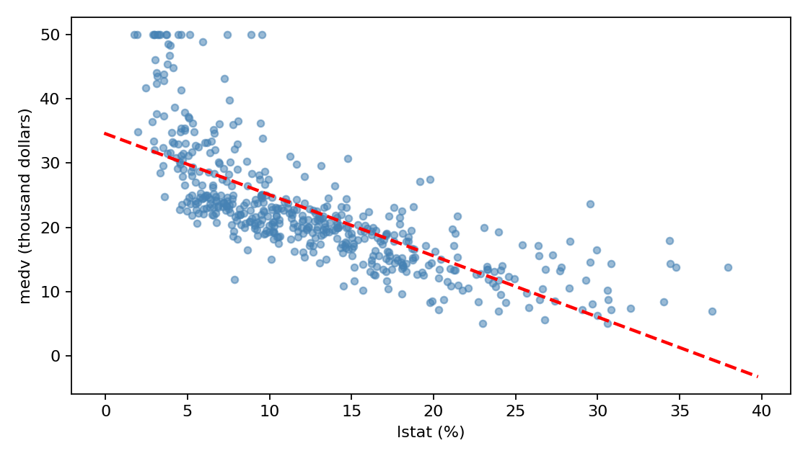

代码 3.6.2-06 · 自定义函数并画拟合线
按完整 Notebook 的顺序运行；本块可能依赖前面的变量。3.6—3.7包含教材真实数据与模拟实验；全样本统计分析不等于独立测试评估。
逐步读代码
def 定义函数；ax是画布中的坐标轴，intercept/slope是截距和斜率。get_xlim() 取当前横轴两个端点；np.asarray 转成数组以便逐元素运算。计算端点y值，再连成直线。
*args 收集额外位置参数，如 'r--'（红色虚线）；**kwargs 收集关键字参数，如 linewidth=2。调用ax.plot时再把它们展开传入。可以先记住这个“把绘图参数传下去”的用途。
figsize 的单位是英寸；s 是点大小；alpha 是透明度；颜色仅服务辨认。tight_layout 调整留白；savefig 保存图；Path之间的 / 拼路径；dpi 决定位图分辨率；show 显示、close 释放图。散点有明显弯曲趋势。
实际运行输出
No text output. See the figure or explanation below.
